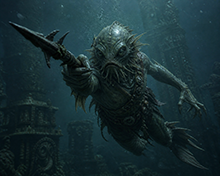

There are abysses beneath the world which no chart has measured and no sane mariner has named. In those cyclopean trenches where sunlight perishes and mortal reason dissolves into black pressure and silence, there lies the drowned dominion of Father Dagon — ancient beyond memory, sovereign of the Deep Ones, and keeper of the basalt monoliths upon which all his kingdom depends.
The monoliths were not carved by human hands, nor by any race known to terrestrial history. They rose from the sea-floor in forgotten aeons when the oceans were young and the moon hung nearer the Earth. Upon their surfaces writhe impossible glyphs whose angles offend geometry itself, and within them pulses a primordial force older than mankind, older perhaps than the stars. So long as the monoliths endure, the abyssal kingdom remains hidden beneath layers of nightmare current and eldritch fog. Should they fall, the protective veil would shatter, exposing the Deep Ones to annihilation and casting Dagon's ancient realm into ruin.
For countless centuries Father Dagon watched in grim silence over his sacred stones while his loyal children multiplied among the drowned temples and coral catacombs of the deep. Yet the sea is no longer still. Something has awakened within the black waters.
From fissures in the ocean floor crawl the monstrous crabs — colossal armored scavengers driven by a blind and terrible instinct to shatter the monoliths stone by stone. Their iron claws ring through the trenches like funeral bells as they swarm against the sacred pillars.
Worse still are the jelly polyps, translucent horrors drifting through the currents with ghastly intelligence. They haunt the forgotten caverns, stalking lone Deep Ones and carrying them away into pulsating nests where unspeakable transformations occur. Those taken do not return unchanged. They emerge as gigantic angler-beasts, warped servants of a foreign will, their monstrous lantern eyes burning with hatred for their former kin.
Nor may Father Dagon swim long without drawing the attention of the terror sharks — pale leviathans whose endless hunger has become legend throughout the abyss. These relentless predators trail him through drowned ruins and volcanic trenches alike, striking from darkness with rows of ruinous teeth.
Even the currents themselves have become hostile. Drifting cephalopods hover through the water like diseased phantoms, scattering clusters of swollen eggs that erupt violently when disturbed, turning peaceful passages into fields of chaos and death. And beneath all things, from chasms too deep for sight or thought, colossal tentacles grope upward through the gloom — vast appendages of some unseen entity sleeping beneath the ocean crust. Whether these limbs serve another god or merely herald the stirring of something infinitely worse, none can say.
Thus the burden falls upon Father Dagon alone.
No longer merely an object of terror whispered of by sailors and madmen, Dagon has become the defender of an endangered kingdom. Through labyrinthine reefs, drowned sanctuaries, and lightless trenches he must battle the invading horrors, rescue his imperiled followers, and preserve the sacred monoliths whose survival sustains the deep.
For if the last monolith should crumble...
...the seas themselves may become a tomb.
Based on Dagon by H.P. Lovecraft (1917)
← Back to Game